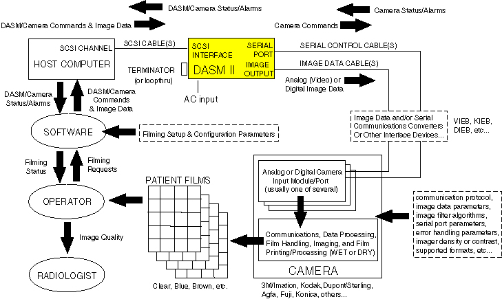

Proprietary to General Electric
Direction 5114045-800, Rev# 10
LightSpeed 4.X Service Information (Advanced)
Proprietary to General Electric |
| Last Revised on: | December 10, 2004 |
The filming subsystem is a complicated chain with many variables (everything shown below). The DASM is right in the middle of it all. The DASM provides a black-box view of the scanner hardware/software as well as the camera hardware/software. This fact can be used to your benefit to help isolate which element in this complex chain Is the REAL root cause of a “filming problem”.
Illustration 1: Filming Subsystem Overview

For detailed information on troubleshooting an analog DASM II (P/N 2249894), please refer to Analog DASM II (2249894).
For detailed information on troubleshooting a digital DASM II (P/N 2249895), please refer to Digital DASM II (2249895).